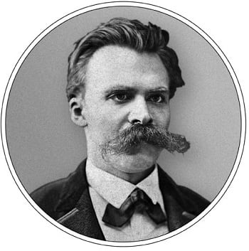
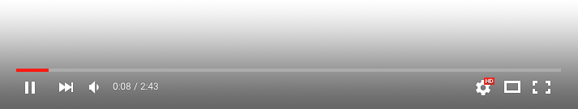

Спикерпанк 2021
Саша
- организатор
- спикер
- разработчик
- тимлид
- безработная
Никита
- организатор
- спикер
- разработчик
- тимлид
- работный
60+ докладов на двоих
Про что поговорим?
- про подготовку доклада;
- про само выступление;
- про лайфхаки от бывалых.

Подготовка
Зачем я это делаю?
Цели
- хочу пропиарить продукт;
- хочу прокачать персональный бренд;
- хочу поделиться знаниями;
- хочу научить делать правильно;
- попросили помочь.
Какая основная мысль доклада?
Тема и описание ✓
<A>
Что такое поисковая выдача? По факту — страница с десятками ссылок. И когда тег <a>
— самое ценное, что нужно отдать пользователю, знать его особенности критически важно. Давайте разберёмся,
какие тайны в себе хранит этот тег, который с нами ещё со стандарта HTML 1.
Тема и описание ✕
Идеальный доклад. Голая правда
Что делает доклад интересным и запоминающимся? Полезная тема, харизматичный спикер, весёлые гифки на
слайдах? Да, но список требований гораздо шире. Может показаться, что готовить доклады сложно. К тому же
непонятно, зачем это нужно лично вам. Плюсы и минусы выступлений для карьеры и личностного роста, как
подготовить тот самый, «идеальный» доклад — от опытных докладчиков и организаторов конференций и митапов.
Подача заявки
- тема доклада;
- описание доклада для сайта;
- описание доклада для ПК;
- личные данные (имя, фамилия, компания, твиттер);
- фото.
Гайды от организаторов
Сбор материала
Куча знаний
↓
Сценарий
Логические части
↓
Материалы
Кто аудитория?
Сколько времени на выступление?
Какой доклад я делаю?
Структура — классика
- о спикере;
- план доклада;
- содержание доклада;
- выводы, резюме;
- контакты спикера;
- благодарность аудитории.
Структура — история
- завязка истории;
- о спикере в истории;
- развитие истории;
- вынесенный урок;
- контакты спикера.
Экспериментируйте
экспозиция
↓
завязка
↓
развитие + кульминация
↓
развязка
Захватить внимание
- работаю в Booble, Yamzex, Spacebook — опыт лидеров;
- постоянно практикуюсь в теме — актуальность;
- являюсь «звездой» в теме — экспертиза;
- имею крутой результат — глубина материала;
- набил(а) шишки в процессе — опыт.
Продажа вакансий
Путь выхода из конфликта
- баг в продакшене — починка;
- недостаток знаний — погружение;
- несовершенство платформы — костыли для неё;
- вызов — решение.
Расскажи историю
Пирамида Минто

Примеры
- Для базового уровня a11y достаточно знаний вёрстки.
- Видео в один кадр может весить меньше кадра-картинки.
- Смотрите, какое элегантное решение. Оно не работает.
- «Я в эфире, я не кот».
О чём был рассказ?
Побуждение к действию
Показать программному комитету и коллегам
Слайды
Мультимедиа
Конкуренты за внимание
- твиттер;
- телеграм;
- почта;
- инстаграм;
- клубдом;
- ...
Какие ваши
любимые доклады?
Спикер
+
Мультимедиа
+
❤︎
Изучите инструмент
запись речи
дополнение к речи
Сколько слайдов?
Движение на экране
Дефолтные темы
Спикерский стиль
или
Стиль под доклад
Спикерский стиль
- Вадим Макеев (тема в Shower);
- Роман Дворнов (Keynote);
- Полина Гуртовая (рисунки от руки);
- Евгений üêà (шрифт).
Стиль конференции
Слайды на «аутсорс»
Минутка практики
¬´–í—Å—ë –ø–æ–∑–Ω–∞—ë—Ç—Å—è
в сравнении»

–î–ª–∏–Ω–∞ —Å–∏–Ω–µ–≥–æ –∫–∏—Ç–∞
достигает 33 метров
–î–ª–∏–Ω–∞ —Å–∏–Ω–µ–≥–æ –∫–∏—Ç–∞
33 метра
33 метра


Звёздные войны: Пробуждение силы / Джей Джей Абрамс
Лицензии на картинки
Только нужное
// my-paint.js
registerPaint('my-paint', class MyPaint {
static get inputProperties() { return ['--foo']; }
static get inputArguments() { return ['<color>']; }
static get contextOptions() { return { alpha: true }; }
paint(ctx, geom, properties, args) {
// ctx - контекст для рисования, как в canvas
// geom - размеры доступной для рисования области
// properties - свойства, на которые реагирует paintWorklet
// args - переданные в paintWorklet аргументы
// Можно рисовать почти как на обычном canvas
}
});
// my-paint.js
registerPaint('my-paint', class MyPaint {
static get inputProperties() {
return ['--foo'];
}
paint(ctx, geometry, properties, args) {
// рисуем на canvas
}
});
Номера слайдов
⬈
Опасная зона

Качество связи
Видео и звук
∨
на свой страх и риск
Фоновая музыка
↓
эмоции
Авторские права
А если не слайды?
Видео лайв-кодинга?
с ПК, с друзьями, с самим собой
назначить заранее — как дедлайн
Онлайн-прогон — почти онлайн-выступление
Лайфхак: запись видео отправить ПК
Как создать картинку для выступления (до-после)
Интернет, разрешение экрана, камера, свет, звук
Источники света: на лицо, на фон, ярко
Разрешение экрана
отсылка к Макееву и Петровой
Фолбек на всё, что может сломаться
Видео вместо ползания по экрану
Аудио — запомнить, что там
Лучше избегать
Быть готовым к заминкам
Выступление

перед выступлением
Успокоиться или взбодриться?
медитации (Meditopia, Simple Habit)
Шутки перед выступлением
Уверенность в себе
Страх — это норм, но видно не должно быть
Поддержка от друзей (приведите друзей на выступление)
Приготовить домашних
Закрыться и забарикадироваться
Договориться с соседями с громкими звуками
Детей и домашних животных увезти из города
Открыть чатик на телефоне или планшете
Выключить нотификации (показать, как)
Саундчек и видеочек
Zoom — кому-нибудь набрать
Голос и артикуляция
Актёры озвучки в машине.
Размять рот (губы, язык, щёки)
Упражнения для вокалистов
На силу голоса
Выглядеть опрятно
Саша и её разные образы
Шорты и тапки в онлайне — если вам комфортно, то норм
Косметика — это нормально (особенно в онлайне)
Под целевую аудиторию (под бизнес строже)
во время выступления
Уверенное вступление, первое впечатление
запоминающееся начало: костюм динозавра, внезапный внешний вид, красивый первый слайд
Говорить громко и чётко
Вовлечение аудитории любыми способами
- плюсик в чате
- онлайн-квиз
В онлайне жесты тоже можно
По сцене можно и нужно ходить
Открытые позы и жесты
классический пример со Стивом Джобсом и презентацией айфона
Смотреть в камеру, не на слайды
Стикерочек на вебке "смотри сюда"
Работа со слайдами
Как открыть браузер на всё окно
Заметки в онлайне можно, их не видно
Телесуфлёр (advanced)
Выделять мышкой или лазером — отстой
Выделять на слайдах красиво, пример
Не читать текст
Тайминг — завести таймер на телефоне или на часах
таймер, который у Фридмана
технический ассистент — кто возьмёт на себя техническую часть
Читать чат и реагировать (адвансед)
Хорошо, нужно, полезно
Но аккуратно — СоС, не стендап
Q&A
- убедитесь, что поняли
- озвучьте вопрос, если зрители его не слышали
- подумайте, прежде чем ответить
- Я ответил(а) на ваш вопрос?
- не знать — нормально
https://twitter.com/yayalexisgay/status/1356284504718135297
Задающий вопрос боится аудитории больше, чем вы. У вас была подготовка месяц, у него полчаса.
Советы бывалых
 Слайды — в Интернет и поделиться
Слайды — в Интернет и поделиться
Отложенные сообщения в чате как заготовленный интерактив — вау-эффект.
Запись доклада и живой доклад в онлайне тяжело различить ;)
ретроспектива
ваше оно или нет?
повторять или не повторять доклады?
митап — как подготовка к конфе
обкатать на коллегах
Подсматривать у стримеров.


 Энтерпрайз, который выжил / Андрей Мелихов
Энтерпрайз, который выжил / Андрей Мелихов
 Вадим Макишвили, Яндекс | 36 | FrontTalks 2014
Вадим Макишвили, Яндекс | 36 | FrontTalks 2014
 Картинки как коробки. Что же там внутри? - Полина Гуртовая
Картинки как коробки. Что же там внутри? - Полина Гуртовая


 iPhone 1 - Steve Jobs MacWorld keynote in 2007
iPhone 1 - Steve Jobs MacWorld keynote in 2007

 github.com/shower
github.com/shower
 New Adventures in Front-End, 2019 Edition / Виталий Фридман
New Adventures in Front-End, 2019 Edition / Виталий Фридман
 «Алиса, пойдём во фронтенд!» / Никита Дубко
«Алиса, пойдём во фронтенд!» / Никита Дубко